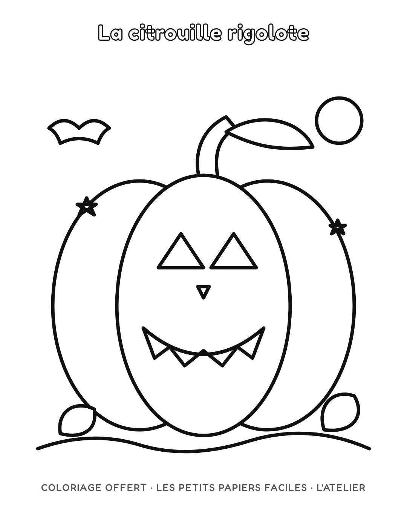
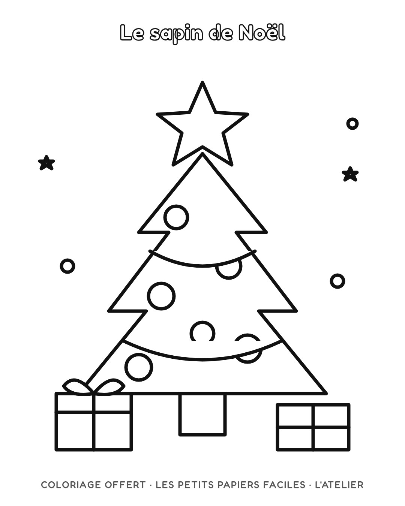

Gratuit
Coloriages à imprimer
Touchez « Télécharger », puis imprimez en A4. Un nouveau dessin arrive régulièrement : suivez l'atelier sur Instagram pour ne pas le rater.





Touchez « Télécharger », puis imprimez en A4. Un nouveau dessin arrive régulièrement : suivez l'atelier sur Instagram pour ne pas le rater.

